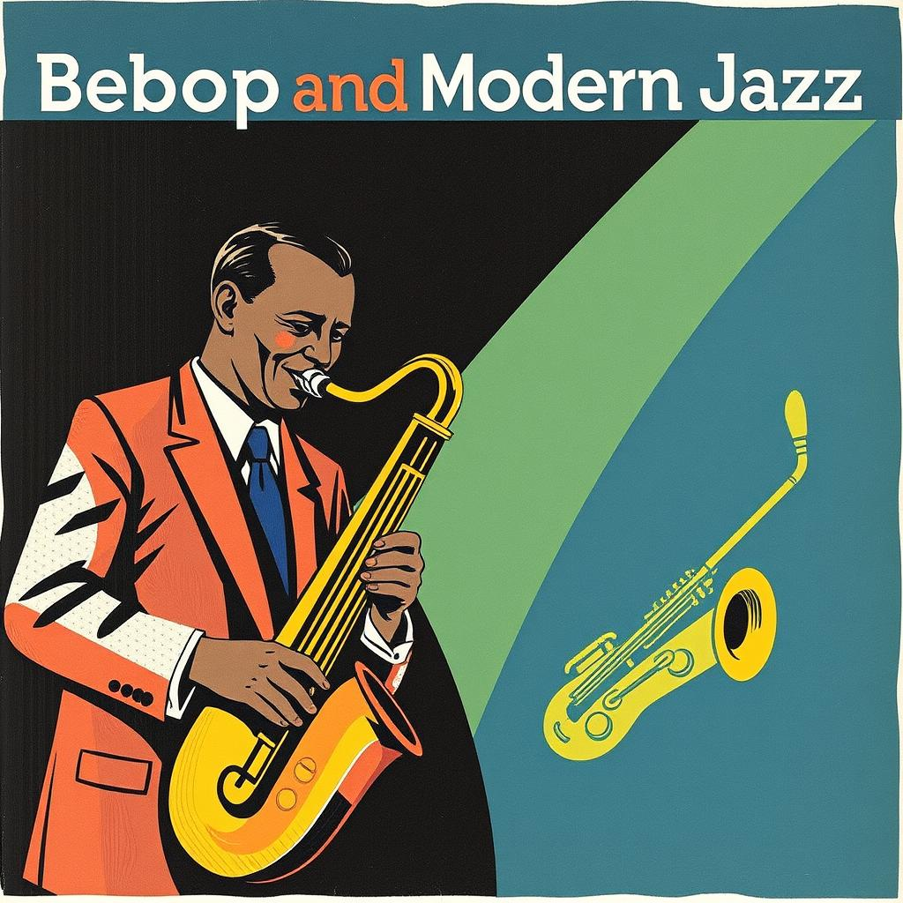

Origins of Jazz
Jazz originated in New Orleans in the late 1800s, blending African rhythms, blues, ragtime, and European harmonic structure. It was primarily a product of the African American experience, rooted in work songs and spirituals.
Early Jazz
The first form of jazz, Dixieland, emerged in the early 1900s, characterized by group improvisation and a lively, syncopated rhythm. Key figures included Louis Armstrong, whose trumpet playing and improvisational genius helped establish jazz as an art form.
Swing Era
The swing era was dominated by big bands, with more structured, danceable music. Duke Ellington, Count Basie, and Benny Goodman were leading bandleaders. This period marked jazz's peak in mainstream popularity.
Bebop and Modern Jazz
In the 1940s, jazz shifted to bebop, a fast, complex style that focused on improvisation and technical skill. Pioneers like Charlie Parker and Dizzy Gillespie revolutionized jazz with intricate solos and unconventional harmonies.
Cool Jazz, Hard Bop, and Modal Jazz
The 1950s introduced cool jazz, a more relaxed, smoother style led by artists like Miles Davis and Chet Baker. Hard bop and modal jazz followed, blending bebop with blues and gospel influences.
Free Jazz and Fusion
The 1960s saw the rise of free jazz, where artists like Ornette Coleman abandoned traditional structures. Jazz fusion combined jazz with rock and funk, with albums like Miles Davis' Bitches Brew leading the movement.
Contemporary Jazz
Since the 1980s, jazz has diversified further, blending with genres like hip-hop, electronic music, and world music. Artists like Herbie Hancock, Pat Metheny, and Esperanza Spalding continue to innovate within the genre.